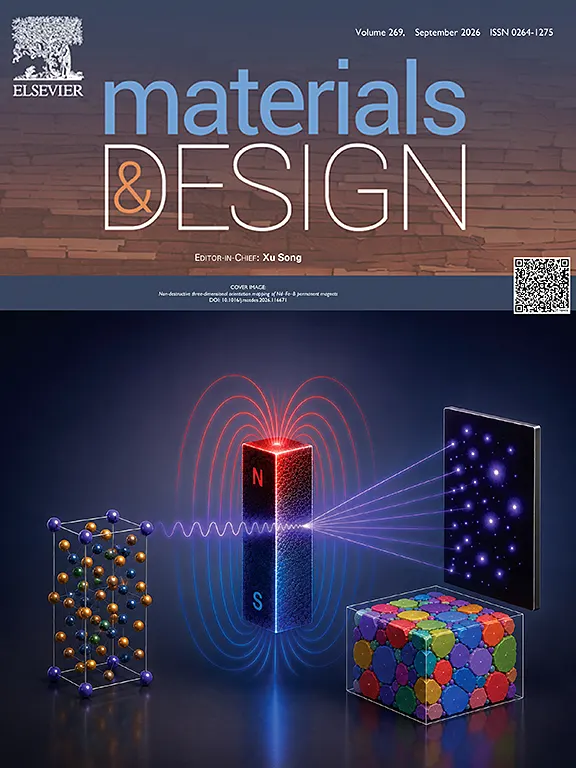

增材制造与光纤传感集成
提出一种在3D打印过程中嵌入传感器的创新光纤集成方法，首次实现增材制造过程中的原位残余应变测量，并可在零部件后续应用中进行结构健康监测。
项目介绍
提出并验证了新型嵌入技术，研制了专用设备，并在实验室中制造出集成光纤的复合材料储罐。该研究考察了光纤传感在结构健康监测中的残余应变、应变传递及温度耦合问题。
研究者
成果
- 发表了关于原位残余应变、时变应变感知及应变—温度解耦的研究成果。该技术已应用于汽车用V型和IV型高压储氢容器。
相关论文


提出一种在3D打印过程中嵌入传感器的创新光纤集成方法，首次实现增材制造过程中的原位残余应变测量，并可在零部件后续应用中进行结构健康监测。
提出并验证了新型嵌入技术，研制了专用设备，并在实验室中制造出集成光纤的复合材料储罐。该研究考察了光纤传感在结构健康监测中的残余应变、应变传递及温度耦合问题。
研究者
